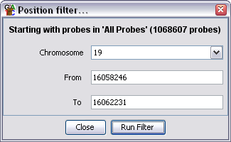

This filter allows you to select only probes which fall into a particular genomic region.

The only options to the position filter are the chromosome you want to use and the start and end position of the region in which you want to select probes.
When the position filter first opens it will fill in the options boxes using the boundaries of the region currently being displayed in the chromosome view.
When applying the filter only probes which are completely contained within the region will be selected. Probes which overlap the start or end of the region will not be included in the filtered set.